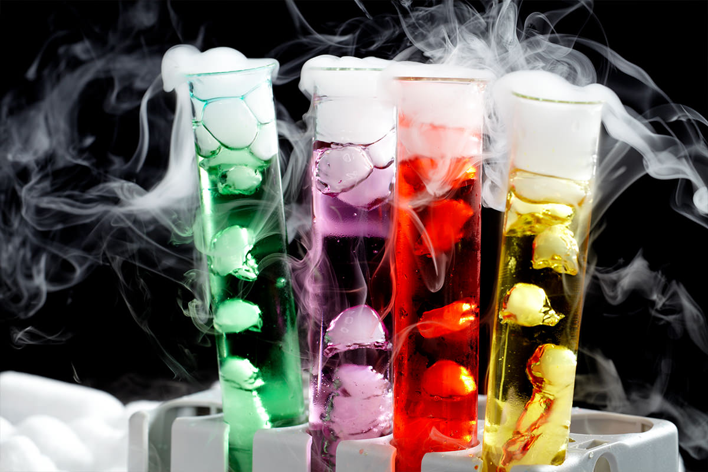

Bonjour, sur cette page je vais vous indiquez ou trouvé les ingrédient pour vos potions.
le top des potions
Mes potions préférés :
le sérum baveur
la potion caméléon basique
le sérum artiste
le nectar chanteur
la potion d'aveuglement
la potion des bulles dansantes
la potion du détraqueur
la potion de nuage

Retrouvez tout ça en forma papier dans petit mannuel de potions pour sorciers débutants ecrit par jean Espérance qui est professeur de physique-chimie au lycée. Passionné par le théâtre et l'audiovisuel, il anime depuis 2013 la chaine youtube Xio Nixes, sur laquelle il analyse des films, livre et jeux vidéo issus de la culture populaire(Harry Potter, Disney...).